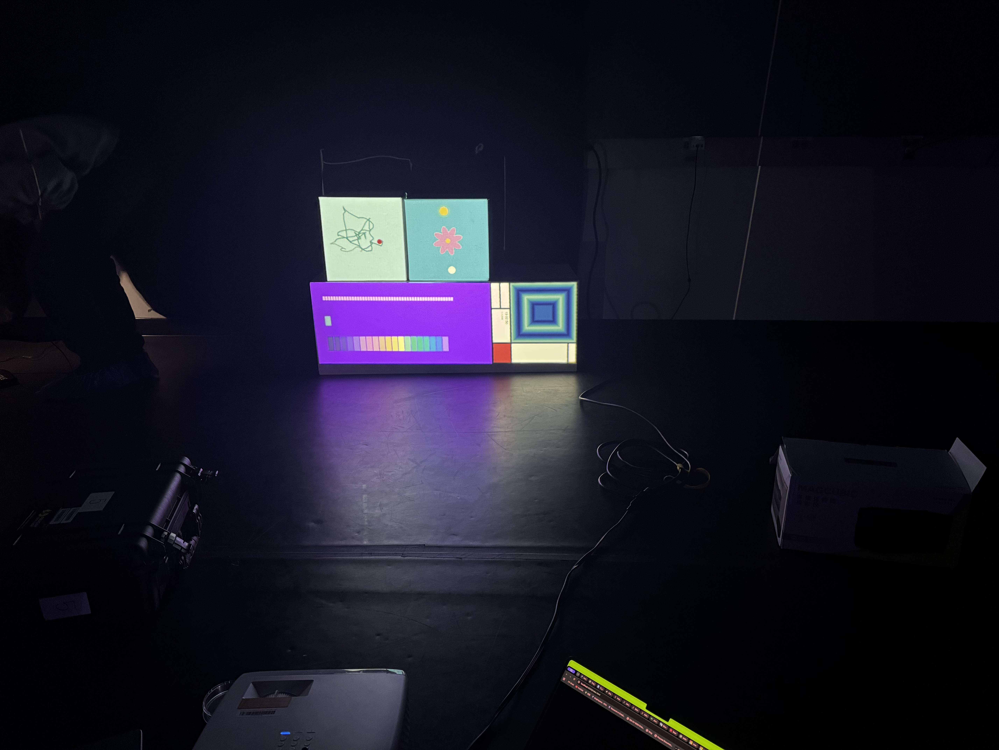

Team Members: Yuqian He, Sisley, Yuetong, Zetao
This project is each team member integrated our individual clock animations into the shared projection-mapping system. So we explored how different visual styles and animations could coexist within the same physical projection environment. By combining independent sketches, we experimented with the relationship between digital imagery, physical surfaces, time, and movement. My animation work was an animated flower clock featuring a flower that gradually opens and closes throughout a simulated day. The background transitions between different sky colors, while the sun and moon move around the flower to represent the passage of time.
We began by experimenting with the projection-mapping setup and developing our individual sketches. We started by combining these animations into one shared program, assigning different visual textures to separate projection surfaces. My flower animation was adapted from my previous Flower Clock project. The main challenge was integrating a sketch originally designed for a 500 * 500 canvas into the team's projection-mapping system.
During our second workshop, we continued adjusting the shared code and testing the projection setup. One issue involved differences between the original sketch dimensions and the graphics buffer used for projection. My flower animation initially appeared incorrectly positioned because its coordinates were being calculated for a different canvas size. To resolve this, I adjusted the positioning and scale calculations within my own texture function while keeping the team's main setup and drawing structure unchanged. We also coordinated several code settings across the team, including angle measurements in degrees and RGB color mode, to improve consistency between our individual sketches. By the end of the workshop, we had integrated our animations into the shared projection mapping system for the class demonstration.
This week, we focused on documenting our process and reflecting on the technical challenges of collaboration. One important lesson was that combining multiple p5.js sketches involves more than placing their code in the same file. Each animation may use different coordinate systems, dimensions, drawing settings, and timing behaviors. Through debugging and testing, we learned how to adapt individual sketches to a shared environment while preserving each member's original visual approach.
